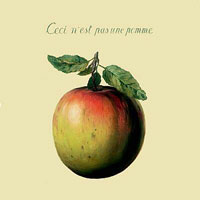

Concept
Art
Concept
Art  Radical
Art [Home Page]
Radical
Art [Home Page]
 Concept
Art
Concept
Art  Radical
Art [Home Page]
Radical
Art [Home Page]
|
|
|
 |
|
|
|
|
The instructions for this piece are on the other side of this sheet.
The instructions for this piece are on the other side of this sheet.
Henry Flynt, January 1961. [Two sides of instruction sheet.]
To perform this piece
do not perform it.
Tony Conrad, Summer 1961
Do not abide by
your decision.
Dick Higgins: Danger Music Number Thirty-Two
(for George Maciunas), April 1, 1963
Timm Ulrichs: Grabstein, 1969
("Denken Sie immer daran, mich zu vergessen!")
William Anastasi:
"I don't want this on my wall", 1998
Ruben Gutierrez:
"Words have no meaning", 2004
Les Coleman: Postcard
("This Card is Temporarily Out of Stock"), 2006
Literature on Paradox and Circularity
|
Related genres
|
Compiled by R. Scha, 2002-2007